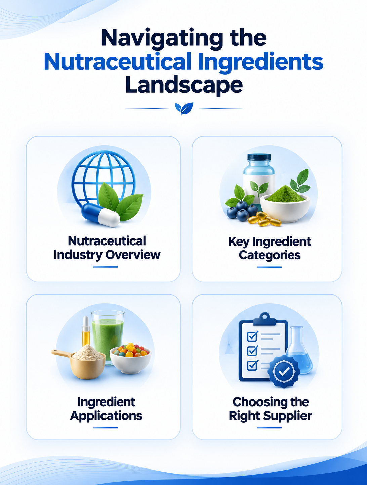

Nutraceutical Ingredients Manufacturers: Key Ingredients & Industry Trends
9 August 2026

The nutraceutical industry covers a broad range of products and ingredients positioned between nutrition and health. These include dietary supplements, functional foods and beverages, sports nutrition products, and specialized nutritional formulations.
As interest in nutrition, wellness, healthy aging, and preventive approaches to health continues to evolve, nutraceutical ingredients could remain an area of interest for product developers and manufacturers. The ingredient landscape includes vitamins and minerals, botanical extracts, probiotics, amino acids, enzymes, proteins, and several other functional ingredients.
The global nutraceutical ingredient supplier landscape is diverse. For buyers, the appropriate supplier could depend on the specific ingredient, target market, application, required specifications, production scale, and technical requirements.
Nutraceutical Ingredients and Their Applications
Nutraceutical ingredients can be used across a variety of finished-product categories. The choice of ingredient generally depends on the intended application, formulation requirements, dosage form, target consumer, regulatory environment, and other product-specific considerations.
Some commonly encountered categories include vitamins and minerals, botanical and herbal extracts, probiotics and prebiotics, amino acids and proteins, omega-3 fatty acids, enzymes, antioxidants, and functional carbohydrates.
The same ingredient category may be available in different forms, grades, concentrations, or delivery formats depending on the manufacturer and intended application.
Key Nutraceutical Ingredient Categories
Vitamins and Minerals
Vitamins and minerals are among the most established ingredient categories used in nutritional products. They can be found in multivitamins, dietary supplements, fortified foods and beverages, and specialized nutritional products. Common examples include vitamins A, B-complex, C, D, and E, along with minerals such as calcium, magnesium, zinc, iron, and selenium.
Botanical Extracts
Botanical ingredients represent another broad area within the nutraceutical sector. Extracts can be derived from herbs, fruits, roots, leaves, seeds, and other plant sources. Depending on the ingredient, botanical extracts may be incorporated into formulations positioned around areas such as immune health, digestive health, cognitive wellness, cardiovascular health, metabolic wellness, stress management, or healthy aging.
Probiotics and Prebiotics
Growing interest in gut health has contributed to greater attention toward probiotics, prebiotics, and other ingredients associated with the microbiome. Probiotic ingredients are used in dietary supplements as well as certain functional foods and beverages. Prebiotic fibers and other ingredients designed to support beneficial microorganisms can also be incorporated into gut-health-oriented formulations.
Omega-3 Fatty Acids
Omega-3 ingredients, particularly EPA and DHA, are used across nutritional supplements and selected functional food applications. Algae-derived omega-3 ingredients may also provide an option for manufacturers developing products around plant-based or non-fish sources.
Amino Acids, Proteins and Sports Nutrition Ingredients
Amino acids and protein ingredients are commonly associated with sports and active-nutrition formulations, although their applications can extend to other nutritional products.
Ingredients such as essential amino acids, branched-chain amino acids, creatine, protein concentrates, and other specialty nutritional ingredients may be incorporated into powders, beverages, bars, capsules, tablets, and other formats.
Factors to Consider When Selecting a Nutraceutical Ingredient Manufacturer
Selecting an ingredient supplier generally involves both technical and commercial evaluation. Depending on the product and target market, manufacturers could consider quality systems and certifications, technical documentation, ingredient specifications, stability, regulatory requirements in the intended market, manufacturing capacity, and customization.
The relative importance of these factors may vary significantly between ingredients and applications. Quality and documentation can be particularly relevant when sourcing nutraceutical ingredients for commercial formulations.
Trends Influencing the Nutraceutical Ingredients Industry
Natural and Clean-Label Ingredients
Interest in natural-source and clean-label products could influence ingredient selection and product development. This may create opportunities for botanical extracts, naturally sourced vitamins and minerals, plant-derived proteins, algae-based ingredients, and other ingredients that align with specific product positioning.
Gut Health and Microbiome Ingredients
Gut health continues to be an area of interest within nutritional product development. This could support further development of probiotics, prebiotics, postbiotics, functional fibers, and other microbiome-related ingredients.
Personalized Nutrition
Personalized nutrition is another area receiving attention across the broader nutrition industry. Developments in nutrition science, digital health, consumer data, and formulation technologies could contribute to products designed around individual nutritional requirements or lifestyle factors.
Plant-Based Nutrition
Interest in plant-based products could continue to influence demand for plant-derived proteins, botanical ingredients, algae-based omega-3s, and other plant-origin nutritional ingredients. Ingredient manufacturers may explore improvements in taste, texture, nutritional profile, processing performance, and formulation flexibility to address different product requirements.
Innovative Delivery Formats
Nutraceutical products are available in increasingly varied formats, including gummies, powders, effervescent products, functional beverages, chewables, and other delivery systems. This creates formulation considerations beyond the active ingredient itself. Taste, stability, dose, processing conditions, and consumer experience can all influence ingredient selection.
The Role of Innovation in Nutraceutical Ingredients
Innovation in nutraceutical ingredients can involve more than developing new compounds. Manufacturers may also focus on improving existing ingredients through better formulation characteristics, delivery systems, sourcing, standardization, and manufacturing processes. For ingredient suppliers, this could provide opportunities to differentiate through technical expertise and application-specific solutions.
Strengthening Digital Visibility with Pharma Content Solutions
Pharma Content Solutions helps nutraceutical ingredient manufacturers build stronger digital visibility by creating SEO-optimized, ingredient-focused content that highlights their products, applications, technical capabilities, certifications, and manufacturing expertise.
Through SEO content, product and ingredient pages, technical articles, application-focused content, and digital marketing solutions, Pharma Content Solutions helps manufacturers reach relevant B2B audiences and improve their visibility when potential buyers are actively researching nutraceutical ingredients and solutions.